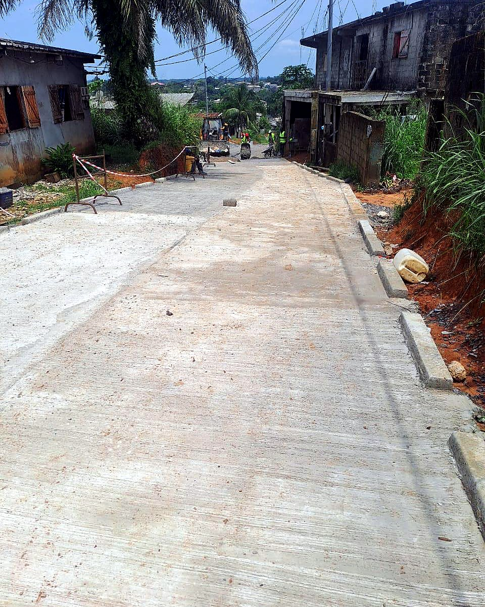

Le chantier a été organisé avec sérieux. Les informations étaient claires et l'accès livré répond bien au besoin quotidien.
Avis clients
Des retours clairs sur la qualité du suivi terrain
Les témoignages ci-dessous restent sobres et orientés chantier : délais, lisibilité, praticabilité et qualité d'exécution.

La piste est plus praticable après les travaux. L'équipe a pris le temps d'expliquer les choix techniques et le drainage.
Le terrassement a été exécuté proprement. On voit que la préparation du sol a été traitée avec méthode.
Nous avions besoin d'un accès chantier exploitable rapidement. La réponse a été structurée et le suivi très correct.
Les échanges ont été professionnels du début à la fin. Le résultat est propre et adapté aux contraintes du terrain.
Le drainage a changé le comportement de la voie pendant les pluies. C'était un point important pour nous.